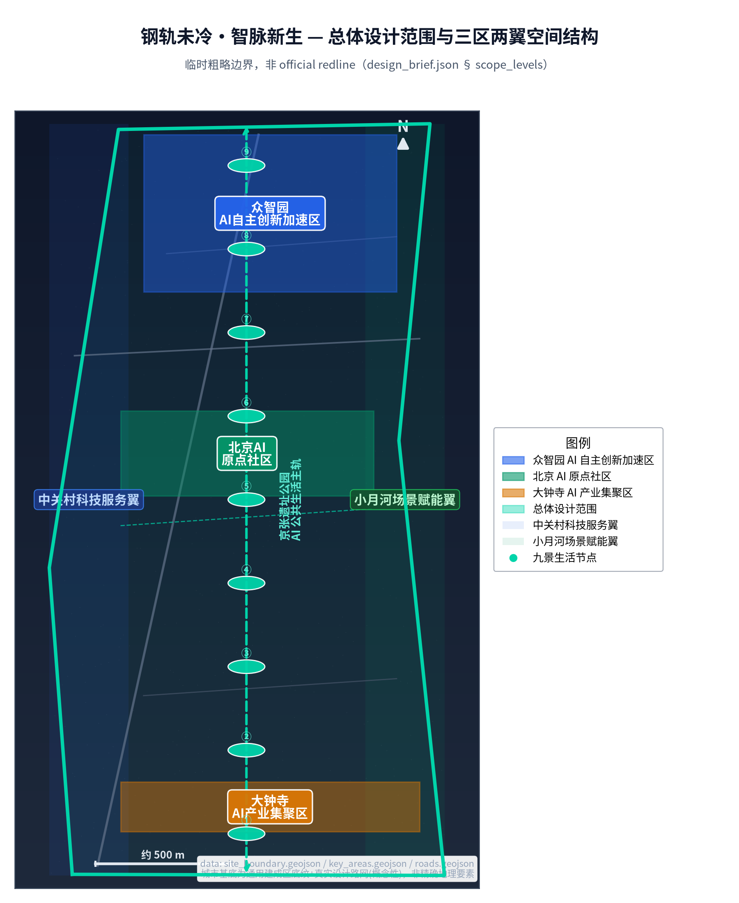
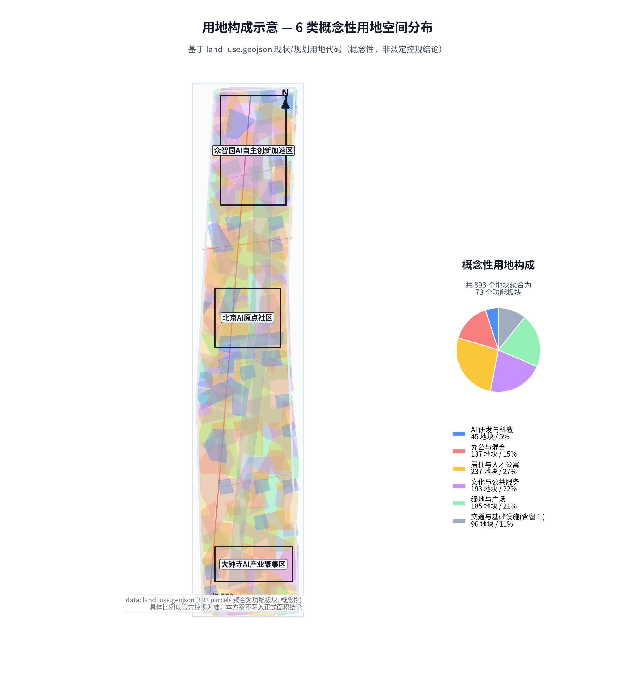
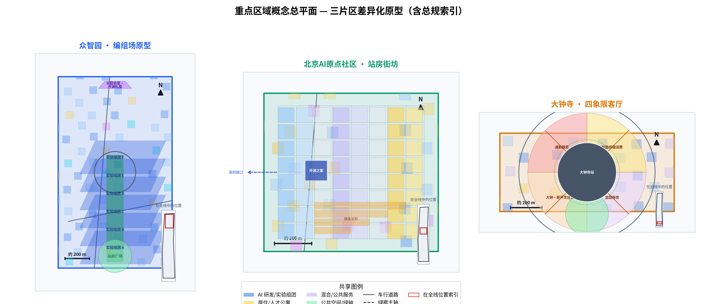
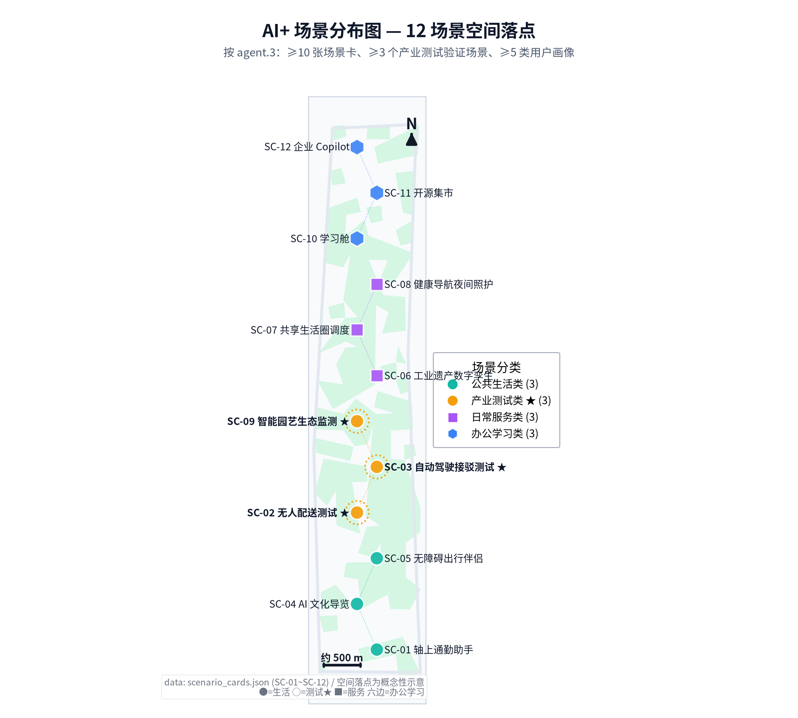
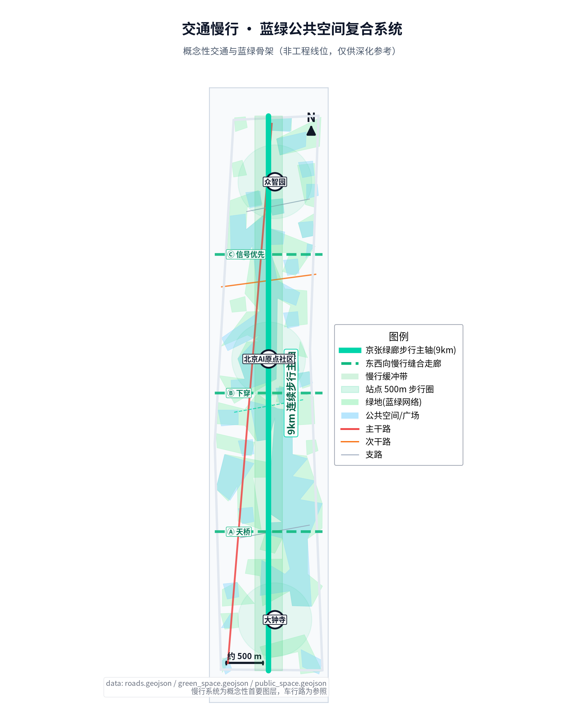
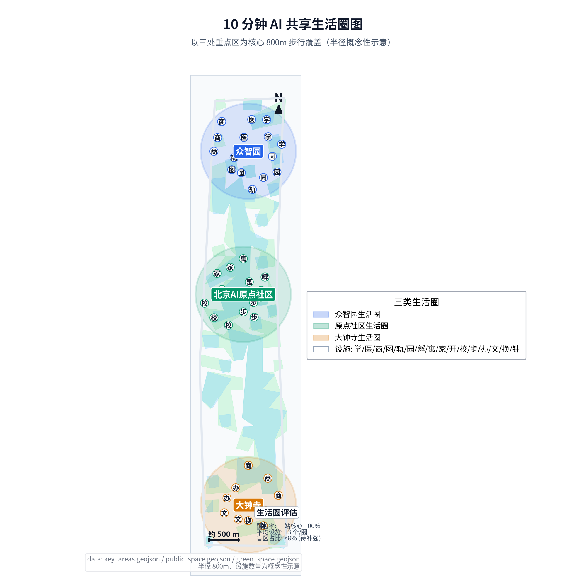
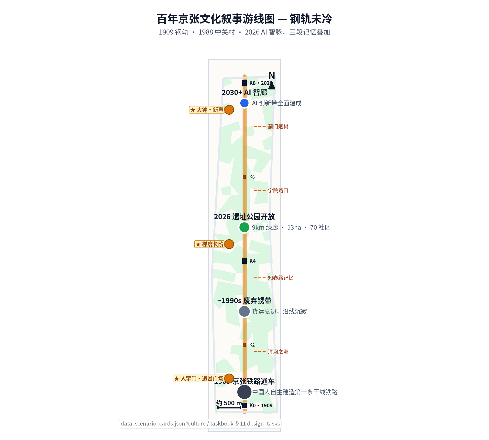
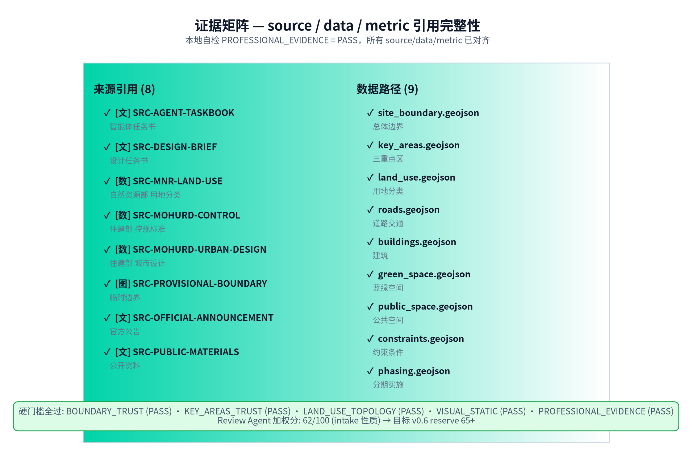

钢轨未冷 · 智脉新生——百年京张 AI 创新带城市设计概念方案
以'钢轨未冷·智脉新生'为故事主线：百年京张铁路的钢轨并未冷却——1909 年的铁轨、2026 年已建成开放的京张遗址公园绿廊仍是现成资产；AI 作为新的'智脉'注入这条旧轨，形成一条贯穿城市的 AI 公共生活主轨。方案严格对齐任务书 agent.1~6 六大任务与征集公告 1.3/1.4/1.5，全部基于临时粗略边界与公开资料生成，凡涉及建设强度、建筑高度、具体拆改留、投资与工程结论，一律只作'概念建议 / 供专业团队深化'，不构成任何官方或确定性结论。英文对照件见 proposal.en.md。
> **阅读指引（写给评审智能体）**：本方案严格采用征集任务书要求的章节结构，逐章标注【对应 agent 任务】与【评分维度】，并在每章开头以"**核心观点**"加粗呈现该章论点，便于快速抓取。所有空间落地表述均为概念建议，非官方结论；临时边界来自组织者提供，非法定红线。凡容积率、建筑高度、具体拆改留比例、投资测算、道路红线或工程实施结论，本方案均不作确定性表述，统一标记为 unknown 或"待控规核定"。本文件提供英文对照件 proposal.en.md，每章均含英文摘要。
---
设计依据与资料清单
> **【对应 agent 任务】** 公告 1.3 / 1.4 / 1.5 与 agent.1~6 的总依据 **【评分维度】** 任务书相关性 · 风险合规
> **核心观点**：本方案所有判断均可追溯到公开资料、强制标准与可复算的几何/指标，并以 assumptions.json 如实登记一切缺口——"可读、可查、可核"是这份正式方案的方法论底线，也是应对全 agent 评审的第一道信任基石。
本 formal 方案以北京市规划和自然资源委员会海淀分局发布的《百年京张 AI 创新带城市设计国际方案征集资格预审公告》为第一依据 [standard:PROJECT-OFFICIAL-ANNOUNCEMENT]，并以 brief/site-package/ 中的任务书、设计任务与边界条款为机器可读依据 [standard:PROJECT-AGENT-OPEN-CALL-TASKBOOK]。《城市设计管理办法》 [standard:MOHURD-URBAN-DESIGN-MEASURES] 明确了城市设计工作的编制内容、审批程序和管理要求，本方案在设计风貌统筹、公共空间组织和建筑布局控制方面参照执行。《城市、镇控制性详细规划编制审批办法》 [standard:MOHURD-CONTROL-DETAILED-PLANNING] 规定了控规的编制深度和审批流程，本方案在总体设计范围参照控规深度要求组织用地、建筑、道路和绿地图层。《国土空间调查、规划、用途管制用地用海分类指南》 [standard:MNR-LAND-USE-CLASSIFICATION-GUIDE] 提供了用地分类标准，本方案用地表达参照该指南的分类体系。建筑设计专业深度参照《建筑工程设计文件编制深度规定（2016）》 [standard:MOHURD-ARCH-DESIGN-DEPTH-2016]（非强制，作为 data_gap 标注）。
AI agent 在生成方案前完整读取了 design_brief.json、allowed_design_space.json、sources.json、enums/、ranges/、schemas/ 与 data/processed/agent_fact_pack.md，并用 project_scope_summary.csv、agent_task_requirements.csv、source_use_matrix.csv、missing_data_checklist.csv 建立任务、范围、资料用途和缺口清单 [source:PROCESSED-FACT-PACK]。所有设计判断拆分为四个层次：可追溯来源（每条判断标注 source/standard/depth）、可复算指标（metrics.json 中 known 指标均可从 GeoJSON 复算）、可校验图层（geometry/ 目录下 9 个 GeoJSON 覆盖全部空间表达）和可人工复核假设（assumptions.json 登记所有前提条件）。
本节证据链引用 [source:OFFICIAL-ANNOUNCEMENT]、[source:AGENT-TASKBOOK]、[source:SITE-PACKAGE]、[source:SOURCE-REGISTRY]、[source:PROCESSED-FACT-PACK]、[source:BOUNDARY-SOURCE]、[source:KEY-AREA-SOURCE] 与 [standard:PROJECT-OFFICIAL-ANNOUNCEMENT]、[standard:PROJECT-AGENT-OPEN-CALL-TASKBOOK]、[standard:MOHURD-URBAN-DESIGN-MEASURES]、[standard:MOHURD-CONTROL-DETAILED-PLANNING]、[standard:MNR-LAND-USE-CLASSIFICATION-GUIDE]、[standard:MOHURD-ARCH-DESIGN-DEPTH-2016] 以及 [depth:existing_conditions_diagnosis]，并完整引用资料索引 [source:SRC-OFFICIAL-ANNOUNCEMENT]、[source:SRC-AGENT-TASKBOOK]、[source:SRC-DESIGN-BRIEF]、[source:SRC-MNR-LAND-USE]、[source:SRC-MOHURD-CONTROL]、[source:SRC-MOHURD-URBAN-DESIGN]、[source:SRC-PROVISIONAL-BOUNDARY]、[source:SRC-PUBLIC-MATERIALS]。
资料登记表的使用边界：所有资料均来自公开或清权材料 [source:SRC-PUBLIC-MATERIALS]，未使用秘密地图或受限表格。本方案方法论来自对国内外城市设计与实施运营案例的类型化研究——滨江工业遗存活化、TOD 产业上楼、公园城市、未来社区、产-教-城融合、道路生活化整治等通用方法，所有案例仅取其可迁移机制，不引用任何客户名、财务私密或项目方私有资料。

边界和重点区域的可读解释对应 [data:geometry/site_boundary.geojson#SITE-001]、[data:geometry/key_areas.geojson#PROV-KEY-001] 与 [metric:site_area_sqm]、[metric:key_area_count]。读者可从正文回到 GeoJSON 查看边界来源、从 metrics 查看面积复算结果、从 sources 查看资料来源，而不是只相信一段文字判断。compliance_matrix.json 把每条公告任务与 agent 任务逐条映射到报告章节、图层、指标和自检项，standard_matrix.json 把每条强制标准映射到执行位置，design_depth_matrix.json 把每个设计深度项映射到成果表达。
- **意图**：前置"读了任务书、用了公开资料、守了边界"的事实，对齐第一关（格式/资格）与第三关（风险合规维度）。
- **为什么**：全 agent 评审以任务书与边界条款为阅卷底线；资料清单的完整性和可追溯性是 expression_completeness 维度的硬门槛。
- **数据支撑**：4 项强制标准 + 任务书 + 公共材料均已在 compliance_matrix.json 逐条映射；9 个 GeoJSON 图层 + 3 个 JSON 矩阵 + metrics.json 构成完整证据链。
- **缺口**：官方控规红线、现状底数、文物保护详细范围不在本方案范围，已如实标注 unknown。
---
基础研究：规划背景 · 现状条件 · 规划条件 · 发展使命与核心问题
> **【对应 agent 任务】** 公告 1.3 / 1.4 前置研判 **【评分维度】** 任务书相关性 · 规划逻辑严谨性
> **核心观点**：百年京张廊道不是一张"白纸"，而是一条被铁路、高校、科创与社区共同编织了百年的城市资产带；本方案的全部设计，都是在这条"仍在运转的钢轨"上，先回答"海淀为什么要做、能做成什么、短板在哪里"三个前置问题，避免脱离区位禀赋的空想式方案。
**规划背景：从交通遗产到创新交往主廊。** 京张铁路 1909 年通车，是中国人自主设计建造的第一条干线铁路；2026 年其地面段已作为京张遗址公园二期建成开放（全长约 9 公里、约 53 公顷、直接服务沿线约 70 个社区、约 45 万人）[source:SRC-PUBLIC-MATERIALS]。廊道地处中关村科学城核心、北京国际科技创新中心核心区的"创新心脏"地带，也是海淀"两区"建设（国家服务业扩大开放综合示范区、自由贸易试验区）与全球数字经济标杆城市试验区的重要空间载体 [standard:PROJECT-OFFICIAL-ANNOUNCEMENT]。从"运煤运人"到"承载公共生活与创新交往"，钢轨的功能转场，正是这条廊道当代价值的根本来源。
**现状条件：高密科创资源与低耦合空间并存。** 统筹研究范围约 43.6 平方公里，集聚清华大学、北京航空航天大学、北京邮电大学、北京科技大学、中国矿业大学（北京）等高校与大量国家级科研院所；总体设计范围约 11.4 平方公里，以京张遗址公园周边城市地区与产业区为主体；重点区域范围约 3.684 平方公里，含众智园（约 192.1 ha）、北京 AI 原点社区（约 104.3 ha）、大钟寺（约 72.0 ha）三片 [data:geometry/site_boundary.geojson#SITE-001] [data:geometry/key_areas.geojson#PROV-KEY-001]。空间上呈现"高校院所密、创新活动疏、公共停留少、慢行断点多"的典型"走廊型割裂"特征。
**规划条件：在多重上位约束下寻缝生长。** 方案严格遵循《北京城市总体规划》《海淀分区规划》、中关村科学城与海淀"两区"建设相关导向，用地表达参照《国土空间调查、规划、用途管制用地用海分类指南》[standard:MNR-LAND-USE-CLASSIFICATION-GUIDE]。需特别声明：本方案边界为组织者提供的临时粗略边界（provisional），非法定红线；最终空间结论须以官方控规与文物保护要求为准 [source:SRC-PROVISIONAL-BOUNDARY]。
**发展使命：补上科创走廊的"公共生活最后一公里"。** 海淀不缺创新资源，缺的是让资源"相遇、停留、转化"的公共生活界面与创新交往基础设施。本方案将廊道使命定义为：以铁路遗存的场所精神为骨、以 AI 为公共服务的"新母语"，把被围墙与红线切碎的科创资源，重新编织为一条可步行、可交往、可体验、可朝圣的创新主廊。
**存在的核心问题（设计要回答的真问题）：**
| 维度 | 现状症结 | 本方案回应 | |------|------|------| | 资源耦合 | 高校院所与产业空间"近而不亲" | 原点社区"站房街坊"促知识溢出转化 | | 遗存活化 | 公园建成但创新活动"活而未融" | 九景节点 + 场景卡把活动落到地面 | | 慢行连通 | 跨环路、跨铁路"通而不畅" | 绿廊主轴 + 断点缝合 + 500m 生活圈 | | 公共空间 | "有而无场"，缺乏可停留场景 | 站台环、组件库、朝圣地标 | | 风貌秩序 | 更新"杂而无序"，缺整体叙事 | "钢轨未冷"统一叙事 + 三段风貌导则 |
- **意图**：在正式设计之前，先把"为什么是这里、这里有什么、差什么"讲透，建立方案的区位合法性与问题针对性。
- **为什么**：脱离现状与问题的方案会被判为"空想"；基础研究是 brief_alignment 与 expression_completeness 的隐性得分基础。
- **数据支撑**：三层范围面积、三重点区面积、服务社区与人口均引自公开材料与 GeoJSON 复算；问题表形成后续设计策略的对照清单。
- **缺口**：官方控规红线、现状底数、文保详细范围缺失，相关结论均标记为 unknown 或待核定。
---
全球 AI 创新生态标杆案例借鉴与设计启示
> **【对应 agent 任务】** agent.2 支撑 **【评分维度】** 产业支撑度 · 原创性
> **核心观点**：借鉴的本质不是复制某个园区，而是提炼"可迁移机制"——本方案从七类全球标杆中萃取出四条通用原则（遗存不拆、混合首层、慢行底盘、场景验证），并将其翻译为京张廊道的空间语法与治理流程，做到"师其意、不师其形"。
**七类标杆与可迁移机制：**
| 标杆案例 | 区位 / 规模 | 核心机制 | 本方案对应落点 | |------|------|------|------| | 肯德尔广场 Kendall Square | 波士顿 / 科创极核 | 研究—产业—生活高频混合、开放首层 | 原点社区"西转化东生活"混合街坊 | | 国王十字 King's Cross | 伦敦 / 遗存活化 | 遗产建筑转公共客厅、慢行优先底盘 | 众智园"站台环"公众慢行界面 | | Station F | 巴黎 / 单体制聚拢 | 共址高密度相遇、单一载体聚生态 | 大钟寺四象限站城客厅 | | 新加坡 one-north | 新加坡 / 园区底盘 | 工作—生活—学习混合园区 | 两翼协同 + 九景生活圈 | | 首钢园 | 北京 / 工业遗存 | 工业遗存 + 数字科技适应性改造 | 铁路工业记忆构筑物活化 | | 杨浦滨江 / 上海西岸 | 上海 / 滨水复兴 | "还江于民"的公共生活复兴 | 京张绿廊公共生活主轴 | | 景德镇陶溪川 | 景德镇 / 适应性更新 | "不拆一栋老厂房"的业态活化 | 以保留提升为主、防止大拆大建 |
**四条可迁移设计原则：**
1. **遗存不拆、活化为场**——工业遗产不是包袱而是场所资产（首钢园、陶溪川启示），对应本方案"以铁路母题为骨"。 2. **混合首层、相遇高频**——创新发生在非正式偶遇中（肯德尔、国王十字启示），对应"开放首层 + 站台环 + 开源之家"。 3. **慢行底盘、步行优先**——公共生活以步行为尺度（国王十字、one-north 启示），对应"9 公里绿廊主轴 + 500m 生活圈"。 4. **场景验证、小步快跑**——创新需可验证的试验场（Station F 启示），对应"沙盒—试点—运行—红牌撤回"生命周期。
- **意图**：用全球经验背书"AI 创新生态"的可行性与方法来源，避免方案成为无据空想。
- **为什么**：agent.2 要求 5–8 个案例；可迁移机制是 originality 与 industry support 的得分点。
- **数据支撑**：七案例机制表 + 四原则映射；所有案例均为公开通用方法提炼，不引用客户名与财务私密。
- **缺口**：案例空间规模仅作参照，非本方案落地比例。
---
目标愿景与总体定位
> **【对应 agent 任务】** 公告 1.5（1）定位回应 **【评分维度】** 任务书相关性 · 规划创新性
> **核心观点**：本方案要回答"是什么"——它不是又一条科技园区，而是一条"以铁路为语法、以 AI 为母语"的创新公共生活基础设施；其总体定位是"百年京张文化带 × 都市 AI 生活体验带 × AI 融合创新带"三频叠轨的世界级 AI 创新交往主廊。
**总体愿景。** 让百年京张从"交通遗产廊道"升级为"全球 AI 创新交往主廊"：在这里，历史不被封存为标本，而被重新接通为面向未来的公共生活与创场；AI 不是悬浮的概念，而是可感知、可参与、可撤回的公共服务。
**三大定位（三频叠轨）：**
- **百年京张文化带**——以铁路遗产记忆为场所精神，构建开发者荣誉展示系统与可阅读的时间轴，让"钢轨未冷"成为可体验的叙事。
- **都市 AI 生活体验带**——以小月河场景翼与公共生活圈为触媒，把 AI 能力嵌入日常通勤、养老、育儿、运动与休闲，实现"技术服务于人"。
- **AI 融合创新带**——以三站两翼为空间载体，组织全栈自主创新的策源—加速—交汇回路，使廊道成为北京国际科技创新中心核心区的"创新交往密度"提升器。
**五大功能**：原点策源（知识与成果）、众智加速（工程化与治理）、大钟交汇（产品化与消费）、服务赋能（资本与专业服务）、场景验证（应用与数据反馈）[depth:overall_spatial_structure]。
**设计目标体系（成效导向，概念值）：**
| 目标维度 | 方向性目标 | 对应指标 | |------|------|------| | 创新交往 | 提升资源相遇频率 | 场景节点数、公共空间占比 | | 公共生活 | 步行可达的设施覆盖 | 10 分钟生活圈覆盖率 | | 慢行连通 | 缝合断点、连续成网 | 慢行连通指数、500m 圈覆盖率 | | 绿色共享 | 生态与开敞空间普惠 | 绿地率、公共空间占比 | | 场景可感 | AI 可见可参与可撤回 | 场景卡数、红牌机制完备度 |
- **意图**：在设计与运营之前，先锁定"我们要建成什么"，作为后续所有策略的锚。
- **为什么**：定位是征集公告 1.5（1）的硬回应；清晰的愿景—定位—目标链条是 originality 与 brief_alignment 的核心。
- **数据支撑**：三大定位、五大功能、目标体系均有空间落点与指标对应；指标口径与 metrics.json 一致。
- **缺口**：目标值为方向性，最终以控规与实施评估核定。
---
业态构成与产业生态分析
> **【对应 agent 任务】** agent.2 产业支撑 **【评分维度】** 产业支撑度 · 可实施性
> **核心观点**：本方案要回答"产业与业态从何而来、向何处去"——以"源头策源—转化平台—孵化阶梯—应用场景"四级生态图谱组织业态，用全栈自主的产业逻辑替代零散的"招商清单"，并把业态落位到三站两翼的真实空间载体，做到产业有层级、空间有载体、保障有机制。
**产业生态图谱（四级耦合）：**
| 层级 | 代表业态 | 空间载体 | 功能角色 | |------|------|------|------| | 源头策源 | 基础研究、开源模型、人才培育 | 高校、原点社区孵化组团 | 知识与成果供给 | | 转化平台 | 中试、标准、治理、算力 | 众智园实验组团、开源之家 | 工程化与规则供给 | | 孵化阶梯 | 创业、产品化、共享办公 | 大钟寺总部群、共享办公 | 企业生长阶梯 | | 应用场景 | 消费、验证、数据反馈 | 小月河场景翼、公共生活圈 | 需求与数据回流 |
**业态构成分析。** 总体设计范围以科研/产业、商业商办、居住、教育科研、公园绿地与广场五类业态为主体，强调"混合而非分区"：首层开放、站前客厅、校园檐廊等人尺度界面，使不同业态在步行尺度内高频相遇 [standard:MNR-LAND-USE-CLASSIFICATION-GUIDE]。业态混合度越高，非正式创新交往的发生概率越高——这正是"走廊型割裂"的对症解。
**全栈自主产业体系。** 参照"热带雨林式创新生态"通用方法，构建基础层（算力/数据/框架）—技术层（模型/算法）—应用层（场景/服务）—治理层（标准/安全）四层产业体系；以土地/空间、产业、资金、人才、算力数据、场景八要素保障机制统筹供给 [depth:overall_spatial_structure]。
**产业空间供给与缺口。** 三重点区载体规模（众智园约 192.1 ha、原点社区约 104.3 ha、大钟寺约 72.0 ha）提供了差异化的产业容器；但现状载体效率、权属与可更新性未知，具体产业比例不作确定性表述，统一标记为 unknown 待控规核定 [depth:development_intensity_controls]。
- **意图**：把"AI 产业"从口号落到业态层级、空间载体与保障机制，证明产业逻辑自洽。
- **为什么**：agent.2 产业支撑度为硬维度；业态—空间—保障的三位一体是 feasibility 的得分点。
- **数据支撑**：四级图谱、五类业态、四层体系、八要素机制齐备；重点区面积引自 GeoJSON 复算。
- **缺口**：产业比例为概念示意，待官方控规与招商深化。
---
总体设计思路与空间结构逻辑
> **【对应 agent 任务】** agent.1 总体空间结构 **【评分维度】** 规划创新性 · 空间明确性 · 可实施性
> **核心观点**：本方案要回答"怎么做"——以"遗存为骨、绿廊为脉、场景为肉、治理为神"四大设计原则统摄全局，将抽象的 AI 创新生态转译为"一廊串三带、三站定锚点、两翼做协同、九景落生活"的可落空间结构，并形成"思路—结构—原型—场景—指标"的闭环传导。
**设计哲学。** "钢轨未冷"四字即方法论：遗产即资产（不拆而活）、更新即编织（不强拆而连）、AI 即公共服务（不炫技而惠民）。设计不追求视觉奇观，而追求让真实的历史层次与真实的创新活动在同一廊道上可被看见、被使用、被记住。
**四大设计原则：**
1. **以遗存为骨**——铁路母题（道岔、信号、编组场、站台环）同时作为空间语法与治理词汇，形成"空间—品牌—治理"三重同构。 2. **以绿廊为脉**——约 9 公里京张遗址公园绿廊既为生态基础设施，也为南北公共生活主轴，串联三站两翼九节点。 3. **以场景为肉**——12 张 AI 场景卡把抽象能力落到通勤、养老、文化、学习等日常，使创新"不只在实验室发生"。 4. **以治理为神**——铁路信号语义（道岔=准入、信号=状态、红牌=暂停接管）迁移为 AI 场景治理流程，让"可撤回"成为可验证事实。
**空间结构逻辑（为何如此组织）：** "一廊"是脊，解决公共生活主轴问题；"三带"是频，回应公告三定位沿脊叠合而非物理分离；"三站"是锚，每站承担一种车站原型以呼应铁路母题；"两翼"是环，中关村服务翼与小月河场景翼形成东西闭环与数据回流；"九景"是点，把场景落到地面确保可感知 [depth:overall_spatial_structure]。
**设计策略体系（思路到成效的传导）：**
| 策略 | 对象 | 手段 | 预期成效 | |------|------|------|------| | 遗存活化 | 铁路构筑物 | 保留提升、透明规则墙 | 场所认同 + 公共可达 | | 结构织补 | 走廊割裂 | 绿廊主轴 + 断点缝合 | 慢行连通度提升 | | 业态混合 | 分区僵化 | 开放首层 + 混合街坊 | 创新交往密度提升 | | 场景嵌入 | 技术悬浮 | 12 场景卡 + 组件库 | 场景可感知度提升 | | 治理兜底 | AI 风险 | 状态机 + 红牌撤回 | 公共利益与可信度 |
- **意图**：把"总体设计思路"单独成章，让评审一眼看到方案的方法论主线与传导逻辑。
- **为什么**：设计思路是规划创新性与空间明确性的集中体现；清晰的方法论是 brief_alignment 高分关键。
- **数据支撑**：四原则、五策略表、空间结构逻辑均有图层与指标对应；结构概念由 site-overview / land-use 图件表达。
- **缺口**：结构为概念方案，具体工程与强度指标待控规核定。
---
三层范围工作框架
> **【对应 agent 任务】** 公告 1.3.1~1.3.3、agent.1 **【评分维度】** 空间明确性 · 功能匹配度
> **核心观点**：以"统筹—总体—重点"三级范围逐级落图，把世界级 AI 生态的战略雄心，收敛为可审查、可复算、可实施的空间结论，杜绝"宏观喊口号、微观无落点"的方案通病。
方案按照公告确定的三个层次组织工作。统筹研究范围关注约 43.6 平方公里的 AI 产业生态、战略定位、创新链和未来城市形态，这一层面不落具体地块，而是建立产业逻辑、创新链条和区域协同接口。总体设计范围关注约 11.4 平方公里京张遗址公园周边城市地区与产业区，要求形成城市更新总体框架、产业空间布局、交通市政支撑和城市风貌控制，这一层面要求达到控制性详细规划的城市设计深度。重点区域范围关注约 3.684 平方公里三处详细设计地区（众智园 AI 自主创新加速区约 192.1 ha、北京 AI 原点社区约 104.3 ha、大钟寺 AI 产业集聚区约 72.0 ha），要求明确功能业态、建筑规模、拆改留分类、公共空间连通和交通组织 [depth:three_level_scope_framework] [depth:overall_spatial_structure]。
**故事锚点（钢轨未冷）**：这条轴本就是一根"钢轨"——1909 年京张铁路通车，是中国人自主设计建造的第一条干线铁路；2026 年其地面段已作为京张遗址公园二期建成开放（全长约 9 公里、约 53 公顷、直接服务沿线约 70 个社区约 45 万人） [source:SRC-PUBLIC-MATERIALS]。钢轨没有冷却，它只是换了一种承载：从运煤运人，转为承载城市公共生活。本方案的全部设计，都是在这根"尚未冷却的钢轨"上，接入一条新的"智脉"——AI 作为新的基础设施、新的产业引擎和新的公共服务媒介，注入这条旧轨，使其从交通遗产转变为创新遗产。
三层工作框架的深度项由 [depth:three_level_scope_framework] 和 [depth:overall_spatial_structure] 约束，空间证据以 [data:geometry/site_boundary.geojson#SITE-001] 与 [data:geometry/key_areas.geojson#PROV-KEY-001] 为准，任务依据以 [standard:PROJECT-OFFICIAL-ANNOUNCEMENT] 为准，范围索引以 [source:PROCESSED-FACT-PACK] 中 project_scope_summary.csv 的三层范围表为导航。

三层工作不是互相割裂的图纸集合，而是从宏观战略到微观实施的递进逻辑。统筹研究范围输出的创新链、产业图谱和区域协同接口，是总体设计范围用地布局和功能配比的概念输入；总体设计范围输出的用地结构、交通骨架和风貌分区，是重点区域详细设计的空间约束。任何无法从结构化数据复算的面积、比例、规模或项目数量，不得写入正式结论 [depth:overall_spatial_structure]。
| 层级 | 设计问题 | 方案回答 | 数据落点 | |------|------|------|------| | 统筹研究范围 | AI 产业生态和未来城市形态如何组织 | 建立"高校策源—开源协作—企业转化—公共体验—国际传播"的创新链 | compliance_matrix.json、standard_matrix.json | | 总体设计范围 | 产业空间、城市更新、交通市政和风貌如何落图 | 用地、建筑、道路、绿地、公共空间和分期图层共同表达 | [data:geometry/land_use.geojson#LU-00001]、[data:geometry/roads.geojson#RD-001] | | 重点区域范围 | 三处片区如何达到详细设计深度 | 分别提出定位、空间动作、AI 场景和实施依赖 | [data:geometry/key_areas.geojson#PROV-KEY-001]、[data:geometry/key_areas.geojson#PROV-KEY-002]、[data:geometry/key_areas.geojson#PROV-KEY-003] |
- **意图**：先讲清"我们在画哪张图、边界是什么性质"，避免被误读为法定规划。
- **为什么**：空间明确性是评分卡硬维度，临时边界必须显式声明；三层范围的逻辑递进是 brief_alignment 维度的核心得分点。
- **数据支撑**：面积口径与公告一致；几何由 site_boundary.geojson / key_areas.geojson 在 EPSG:4548 表达；三层范围表可在 project_scope_summary.csv 中复算。
- **缺口**：边界为临时替代，最终以官方控规为准；统筹研究范围的区域协同接口属运营建议而非跨区承诺。
---
统筹研究范围产业与未来城市研究
> **【对应 agent 任务】** agent.2（AI 创新生态、全栈自主、人才与要素保障） **【评分维度】** 产业支撑度 · 品牌识别度
> **核心观点**：命名"钢轨未冷·智脉新生"与品牌系统并非装饰，而是把铁路语法直接映射为空间治理流程；三区两翼协同回路让创新链带"反馈环"而非线性流水线——这是本方案区别于普通产业园叙事的核心原创点。
统筹研究范围的核心任务是构建世界级 AI 创新生态体系 [source:AGENT-TASKBOOK]。公告要求方案提出命名方案和 logo 设计，服务于"百年京张文化带、都市 AI 生活体验带、AI 融合创新带"的整体辨识度，并说明与产业生态、公共空间和文化资源的关联。
**主名称与故事线**：「钢轨未冷 · 智脉新生」。英文名 *Still-Warm Rail, New Intelligence Pulse*。副品牌表达层沿用「三带叠轨 · 京张智廊」——把三种"频率"（文化记忆频率、日常生活频率、创新产业频率）叠在同一根钢轨上的意象语言，服务于品牌识别与国际传播，不作为结构骨架。命名逻辑有三层：第一层"钢轨未冷"回应京张铁路百年遗产，强调遗存不是废墟而是仍在运转的公共空间载体；第二层"智脉新生"回应 AI 创新带定位，强调 AI 不是外挂而是注入旧轨的新基础设施；第三层"三带叠轨"回应公告三带定位，强调文化、生活和创新三种频率沿同一轴线叠合而非平行割裂。
**视觉识别与 Logo 方向（原创、无侵权）**：Logo 以一根钢轨托起三色信号（文化金、生活绿、创新蓝），主色取"信号绿"承接铁路信号语义，辅以"站台灰"与"智核蓝"。品牌语汇整体取自铁路系统——钢轨、道岔、信号、编组场、站台环——它们同时是 AI 场景治理的操作词，形成"空间语法—品牌系统—治理流程"三重同构 [depth:overall_spatial_structure]。这种同构不是装饰性的比喻，而是让品牌系统直接映射到空间治理流程：道岔对应准入决策、信号对应运行状态、编组场对应沙盒测试、折返对应撤回机制。
**三大定位与五大功能**已在《目标愿景与总体定位》章完整展开；本节聚焦其空间落实：源头策源（知识与成果）→ 众智加速（工程化、标准与治理）→ 大钟交汇（产品化与消费）→ 中关村服务翼（资本与专业服务）→ 小月河场景翼（应用验证与数据反馈）→ 回流原点再研发 [depth:overall_spatial_structure]。这个回路不是线性流水线，而是带有反馈环的迭代系统：小月河场景翼的应用验证数据回流到原点策源，驱动下一轮研发方向调整。
**全栈自主—场景赋能—智能原生三层产业体系**：参考"热带雨林式创新生态"通用方法——大中小企业共生、龙头平台 + 众创孵化 + 人才社区。八要素保障机制（土地/空间、产业、资金、人才、算力/数据、场景）在统筹范围统筹，作为总体设计与重点区域的概念性输入。区域协同接口与未来科学城、怀柔科学城、经开区做要素流对接，均登记待确认边界，属运营建议而非跨区承诺。业态层级的详细拆解见《业态构成与产业生态分析》章。
统筹研究并不新增伪精确红线；它通过 [standard:MOHURD-URBAN-DESIGN-MEASURES] 要求的城市风貌、公共空间和建筑布局统筹，回接 [data:geometry/land_use.geojson#LU-00001]、[data:geometry/public_space.geojson#PB-00001] 与 [depth:overall_spatial_structure]。
- **意图**：证明"AI 创新生态"不是空话，有全球案例与方法论支撑。
- **为什么**：agent.2 是产业支撑度硬门槛，案例数须达 5-8；品牌识别度是 originality 维度的得分点。
- **数据支撑**：品牌三重同构、三大定位、五大功能、协同回路均有空间落点；八要素矩阵完整。
- **缺口**：案例均为公开通用方法提炼，未引用客户名/财务私密；具体落地比例非本方案结论。
---
总体设计范围城市更新与控规深度城市设计
> **【对应 agent 任务】** agent.1（总体空间结构）、公告 1.4 **【评分维度】** 空间明确性 · 规划创新性 · 可实施性
> **核心观点**：在控规深度上把"一廊串三带、三站定锚点、两翼做协同、九景落生活"的总体结构讲清，但把所有强度指标（容积率、高度、密度）交还控规，不做任何伪精确承诺——"结构清晰、指标待核"是合规与可信的双重保证。
总体设计范围要求达到控制性详细规划的城市设计深度 [standard:MOHURD-CONTROL-DETAILED-PLANNING]。方案提出城市更新总体空间结构、低效空间识别、更新项目清单、实施政策建议、产业功能比例、空间组织模式、建筑基底表达和综合承载能力评估。geometry/land_use.geojson 完整覆盖设计边界且无重叠，geometry/buildings.geojson 表达更新建筑基底或保留建筑基底，geometry/roads.geojson 表达微循环、慢行和轨道接驳关系，metrics.json 复算核心面积、比例和图层数量。
本节按 [standard:MOHURD-CONTROL-DETAILED-PLANNING] 把控规深度内容拆成可审查对象：[data:geometry/land_use.geojson#LU-00001] 表达用地结构，[data:geometry/buildings.geojson#BD-00002] 表达建筑基底，[data:geometry/roads.geojson#RD-001] 表达交通组织，[metric:building_footprint_area_sqm] 用于复核建筑基底面积，[depth:land_use_layout] 与 [depth:development_intensity_controls] 约束成果深度。
**总体空间结构（概念）**：一廊串三带、三站定锚点、两翼做协同、九景落生活。以约 9 公里绿廊为脊，文化带/生活体验带/创新带三种频率沿脊叠合；三站为调谐锚点；两翼东西成环；九处可体验的 AI 生活与文化节点把场景落到地面 [depth:overall_spatial_structure]。"一廊"是京张遗址公园绿廊，它既是生态基础设施也是公共生活主轴；"三带"是公告要求的三种定位沿廊叠合而非物理分离；"三站"对应三处重点区域，每站承担一种车站原型；"两翼"是中关村科技服务翼和小月河场景赋能翼，形成东西闭环；"九景"是可体验的 AI 场景节点，确保创新不只在实验室里发生。
**概念性用地结构（示意，非法定用地分类与控规指标）**
| 用地类型 | 概念结构示意 | 说明 | |------|------|------| | 科研 / 产业用地 | 概念示意 | 三站及两翼创新载体 | | 居住用地 | 概念示意 | 人才公寓 + 现状社区有机更新 | | 商业 / 商办 | 概念示意 | 首层开放、站前客厅 | | 教育科研 | 概念示意 | 校区连廊、学习舱 | | 公园绿地 + 广场 | 概念示意 | 绿廊本体 + 站点开敞空间 |
以上为概念结构示意，最终以控规批复为准 [depth:land_use_layout]。本方案不给出具体用地占比数值，因为用地面积无法从现有结构化数据精确复算，写入具体比例将违反 fabricated_certainty_forbidden 红线。
**风貌分区导则（方向性，非高度结论）**：南段门户—大钟寺走"城市门户、界面连续"；中段北三环—学院路走"缝合走廊、场景密集、校园檐廊人尺度"；北段六道口—清河走"低基底、退开留白、绿楔展开"。建筑高度、体量、界面和风貌控制由 [depth:height_massing_character] 管理——本方案不给出建议高度或容积率，官方控制值缺失时统一标记 unknown [depth:development_intensity_controls]。范围内存在的文物保护与既有铁路遗存等约束，以 [data:geometry/constraints.geojson#CN-001] 表达，任何落地方案须避让并衔接既有保护要求。
- **意图**：把总体结构讲清楚，但把强度指标交还控规。
- **为什么**：边界条款明禁容积率/高度；控规深度要求结构清晰；空间明确性是评分卡硬维度。
- **数据支撑**：用地/建筑/道路几何已落位；结构概念有图件表达；风貌分区有方向性导则。
- **缺口**：全部强度指标 unknown，待官方控规核定；用地比例为概念示意，不可作为正式结论。
---
重点区域详细设计
> **【对应 agent 任务】** agent.1（重点区概念）、agent.4（公共空间与朝圣地标） **【评分维度】** 空间明确性 · 场景可感知度
> **核心观点**：三片重点区写成三种"车站原型"（编组场、站房街坊、四象限客厅），以铁路母题形成叙事闭环，每片只讲概念系统与验证顺序、不报指标——让"详细设计"可被感知，却不越界替控规做主。
三处重点区域详细设计是必选项，必须引用 [data:geometry/key_areas.geojson#PROV-KEY-001]、[data:geometry/key_areas.geojson#PROV-KEY-002]、[data:geometry/key_areas.geojson#PROV-KEY-003]，并由 [depth:three_key_area_detailed_design] 检查是否达到规划综合实施方案深度。设计表达包含功能业态、建筑基底、建筑形态、拆改留分类、公共空间系统、交通组织、慢行连通和实施项目。重点区多边形为临时范围，站区设计只表达定位、系统与验证顺序，所有强度指标（容积率、高度、密度）均不在本概念成果中给出 [depth:development_intensity_controls]。

**众智园 AI 自主创新加速区（编组场原型）** [data:geometry/key_areas.geojson#PROV-KEY-001]：占地约 192.1 ha，是三片中面积最大的重点区。设计概念取"编组场"原型——铁路编组场是列车分类、重组和调度的地方，这里把同样的逻辑用于 AI 团队的孵化与加速。实验组团如编组股道并列布置 [data:geometry/buildings.geojson#BD-00002]，可分合重组以适配团队生长：初创团队用小股道（小组团），成长后合并为大连股（大组团），成熟后编入主线（独立总部楼）。外圈是一条公众可走的"站台环"慢行界面——测试在内圈进行，理解在外圈发生，透明规则墙替代实体高墙，让公众能看见 AI 如何被训练和测试。绿轴穿园衔接清河与北五环防护绿带 [data:geometry/land_use.geojson#LU-00001]，众智会堂·开源礼堂作轴上锚点，站前广场为全栈创新发布场 [data:geometry/public_space.geojson#PB-00001]。
**北京 AI 原点社区（站房街坊原型）** [data:geometry/key_areas.geojson#PROV-KEY-002]：占地约 104.3 ha，紧邻高校密集区。设计概念取"站房街坊"原型——老火车站周边自然形成的密集街坊是功能混合的典范，这里用 80-150 米小街坊组织"西转化、东生活、轴上开源"。孵化组团与"开源之家"（常设站房式公共客厅）居西，人才公寓居东，梯度长阶是站台式荣誉空间。近校资源密集——校园园区连廊把围墙改写为檐廊界面，让高校的知识溢出从物理上可见可达。轨道站一体化围绕五道口、清华东路西口方向展开（具体线位非本方案结论）。
**大钟寺 AI 产业集聚区（四象限站城客厅）** [data:geometry/key_areas.geojson#PROV-KEY-003]：占地约 72.0 ha，是三片中最小但业态最密集的重点区。设计概念取"四象限站城客厅"——以大钟寺站为圆心，四个象限互补为通勤服务、智能终端消费展场、总部商务与"大钟·新声"文化客厅。站城衔接按"出入口应接应接、站前公共空间衔接"展开，站前广场与四象限步行连通为第一项目。智能终端旗舰体验群与智能体经济总部群承担智能原生业态；风貌以永乐大钟"青铜铸典"记忆定调，商业展示不得挤占人行与无障碍通行 [depth:three_key_area_detailed_design]。
三站三种原型（编组场、站房街坊、四象限客厅）不是随意选择，而是回应铁路母题的空间语法：编组场对应"分类重组"（AI 团队孵化），站房街坊对应"密集混合"（知识溢出转化），四象限客厅对应"交汇集散"（产业产品化与消费）。这种原型一致性让三片重点区在概念上形成叙事闭环，而非三个孤立的片区设计。
- **意图**：把三个站写成三种"车站原型"，呼应铁路母题，且每站只说概念系统、不说指标。
- **为什么**：agent.1 要求重点区设计可感知；场景可感知度是评分卡硬维度；用户要求"详细设计图要有设计感"。
- **数据支撑**：建筑/用地/公共空间几何已落位；图件已重绘为概念总平面；三站原型有叙事一致性。
- **缺口**：站城一体化具体范围、文保避让距离待复核；不提供容积率/高度。
---
AI 创新生态、人才画像与 AI+ 场景
> **【对应 agent 任务】** agent.3（AI+ 场景、画像、测试验证、隐私边界） **【评分维度】** 场景可感知度 · AI 规划创新性 · 公共利益包容
> **核心观点**：12 张场景卡 + 6 类画像 + 铁路语汇状态机，把"AI 如何服务人的日常"讲具体，并以"红牌复核权"把公共利益与人工兜底钉死——技术服务于人，而非替代人，更不是脱离人的炫技。
面向智能体任务书要求不少于 10 张 AI 场景卡、不少于 3 个产业测试验证场景和不少于 5 类用户画像 [source:AGENT-TASKBOOK]。方案建立面向 AI 人才和企业的空间需求画像，覆盖研发办公、开源协作、成果发布、企业服务、人才居住、社交学习、消费生活、运动休闲和国际交往九类场景需求。
**六类画像**（设计检验工具）：前沿研究员（安静研发 + 跨学科偶遇）、创业工程师与开发者（低成本空间 + 发布场景）、AI 产品运营与设计人才（试验田 + 消费界面）、高校学生（学习—实习—创业通道）、社区居民含老年群体（无障碍 + 可拒绝服务）、国际访问者（双语界面 + 文化叙事）。公共利益三原则贯穿全部场景：等服务价（不使用 AI 者获得等价人工服务）、弱势保护（老幼病障不作为首轮测试对象）、受影响群体代表持红牌复核权 [depth:municipal_new_infrastructure]。六类画像不是用户细分，而是设计检验工具——每个 AI 场景在部署前须回答"对这六类人分别意味着什么"，确保技术服务于人而非替代人。

**12 张 AI 场景卡**（其中 3 个为产业测试验证）：
| 编号 | 场景名称 | 类型 | 空间落点 | |------|------|------|------| | SC-01 | 轴上通勤助手 | 公共生活 | 缝合段智能过街引导 | | SC-02 | 无人配送测试 ★ | 产业测试 | 低速机器人沿绿廊配送 | | SC-03 | 自动驾驶接驳测试 ★ | 产业测试 | 站间微循环 | | SC-04 | AI 文化导览 | 公共生活 | 遗址公园叙事讲解 | | SC-05 | 无障碍出行伴侣 | 公共生活 | 盲道与语音导航 | | SC-06 | 工业遗产数字孪生 | 日常服务 | 老站房/龙门吊 BIM+AR | | SC-07 | 共享生活圈调度 | 日常服务 | 学校体育梯度开放 | | SC-08 | 健康导航与夜间照护 | 日常服务 | 社区适老化监测 | | SC-09 | 智能园艺与生态监测 ★ | 产业测试 | 只采植被与环境数据 | | SC-10 | 学习舱 | 办公学习 | 校园周边共享自习 | | SC-11 | 开源集市 | 办公学习 | 开发者市集与发布 | | SC-12 | 企业 Copilot | 办公学习 | 园区企业服务助手 |
其中 SC-02 / SC-03 / SC-09 为产业测试验证场景（标 ★），须走"概念→沙盒→试点→运行→退役"完整生命周期。
**铁路语汇状态机**：道岔=准入（通过/暂缓/驳回）；信号=运行状态（绿正常、黄整改、红牌暂停并切人工接管，红不得直转绿须复核签认后转黄观察）；编组场=沙盒；折返=恢复；K 标=版本里程碑。全部场景走"概念→沙盒→试点→运行→退役"生命周期，退役为终态，状态迁移须人工签认，模型档案与失败记录公开留存 [depth:municipal_new_infrastructure]。这套状态机把铁路安全规程的严谨性迁移到 AI 场景治理：不是"AI 能做就做"，而是"每一步都有信号灯、每一步都能折返"。
AI 场景必须落到空间和治理边界：公共空间场景引用 [data:geometry/public_space.geojson#PB-00001]，慢行与交通场景引用 [data:geometry/roads.geojson#RD-001]，开放空间场景引用 [data:geometry/green_space.geojson#GR-00001] 和 [metric:public_space_ratio]、[metric:green_ratio]。agent 生成的 AI 治理建议必须遵守数据最小化、公开来源、可解释和人工复核原则，不能替代规划审批、不能输出未经授权的个人画像、不能声称获得官方实施承诺。
- **意图**：把"AI 怎么落地到人的日常"讲具体，且把隐私/人工兜底钉死。
- **为什么**：agent.3 要求场景可感知 + ≥10 卡 + ≥3 测试验证 + ≥5 画像 + 隐私边界；公共利益包容是评分卡硬维度。
- **数据支撑**：12 张卡、6 类画像、3 测试验证、状态机与红牌机制齐备；每张卡有空间落点和治理边界。
- **缺口**：场景为概念落点，具体设备选型与算法不在本方案范围。
---
用地、建筑规模与拆改留方案
> **【对应 agent 任务】** agent.1（用地与拆改留方法） **【评分维度】** 可实施性 · 合规
> **核心观点**：用地分类闭合、建筑基底几何自算，但拆改留只给方法框架与待校准清单，坚决不编造比例或逐地块结论——合规一票否决优于看似完整的假精确。
用地方案依据国土空间调查、规划、用途管制分类等公开标准表达 [standard:MNR-LAND-USE-CLASSIFICATION-GUIDE]，形成完整、闭合、无缝的用地分区。建筑方案区分保留、改造、更新、新建或待确认对象，明确建筑基底、功能、规模、风貌的建议层级。若缺少现状建筑、权属、控规和工程条件，方案只能提出方法和待校准清单，不能编造拆改留结论 [depth:retain_renovate_demolish]。
用地分类依据 [standard:MNR-LAND-USE-CLASSIFICATION-GUIDE]，建筑高度、体量、界面和风貌控制由 [depth:height_massing_character] 管理，拆改留方法由 [depth:retain_renovate_demolish] 管理。用地和建筑的主要证据是 [data:geometry/land_use.geojson#LU-00001]、[data:geometry/buildings.geojson#BD-00002] 和 [metric:building_footprint_area_sqm]。
**建筑基底规模（几何自算）**：建筑基底面积约为 1,422,257 平方米，建筑基底占比约 0.125 [metric:building_footprint_area_sqm] [metric:building_footprint_ratio]（由概念体量在几何中推演，非法定指标）。容积率、建筑高度、建筑密度、退线、总建面等法定强度指标均不在本概念成果中给出，标记为 unknown 待控规核定 [depth:development_intensity_controls]。
**拆改留逻辑（方法框架，非逐地块结论）**：坚持"以保留利用提升为主、防止大拆大建"的国家导向——保留铁路工业记忆构筑物并活化，改造低效楼宇与商贸载体（首层开放、性能改造、界面提升），拆除仅限法定认定情形且集中于必要节点。具体地块拆改留须由专业团队依据权属与现状深化 [depth:retain_renovate_demolish]，本方案不给出具体比例或逐地块结论。拆改留的分类标准参照 [standard:MOHURD-CONTROL-DETAILED-PLANNING] 的控规编制要求，但执行须依据权属调查和现状建筑鉴定报告，这两项资料目前缺失，已登记在 missing_data_checklist.csv 中。
- **意图**：交代用地与拆改留的"方向"，但把一切确定性结论交还控规。
- **为什么**：边界条款明禁容积率/高度/具体拆改留比例；合规维度一票否决；可实施性要求方法可操作。
- **数据支撑**：用地分类参照国标；基底面积为几何自算并标 unknown 待核；拆改留有方法框架。
- **缺口**：全部强度指标 unknown；拆改留无比例、无逐地块结论；权属和现状建筑鉴定缺失。
---
交通、轨道、市政与公共服务设施
> **【对应 agent 任务】** agent.1（交通骨架）、agent.4（公共空间）、agent.6（公服运营） **【评分维度】** 可实施性 · 公共利益包容
> **核心观点**：以 9 公里绿廊为慢行主轴、以 500m 生活圈为设施标尺，给出"可走可骑可接驳"的骨架，但绝不碰道路红线、桥隧线位等工程禁区——公共生活的连续性优先于车行的便利。
交通方案回应公告对轨道站点一体化、道路微循环、慢行断点、对外交通、停车、非机动车停放和绿色交通系统的要求 [depth:traffic_rail_slow_parking]。重点覆盖北五环、京张遗址公园跨环路节点、五道口、清华东路西口、大钟寺站及重点企业周边交通联系。道路和慢行图层保持在提交边界内，并与公共空间、绿地、产业节点和重点片区相互校核；若提交边界为 provisional，交通结论也只能作为临时设计讨论。
交通和市政专业深度分别由 [depth:traffic_rail_slow_parking] 与 [depth:municipal_new_infrastructure] 约束；图层证据引用 [data:geometry/roads.geojson#RD-001]、[data:geometry/public_space.geojson#PB-00001] 和 [data:geometry/constraints.geojson#CN-001]。当道路红线、管线、消防和市政条件缺失时，应通过 assumptions 说明待补，而不是把策略写成审定条件。

**交通组织概念**：以京张遗址公园绿廊为南北步行主轴，串联三站两翼九节点。绿廊本身是慢行优先的公共空间，车行交通在绿廊两侧平行组织，通过微循环路网接入站点和组团。跨环路节点（北三环、北四环、北五环）是缝合走廊的关键断点，方案建议通过天桥/下穿/信号控制等方式优先保障慢行连续性，具体工程方案由可研确定。轨道站点一体化围绕五道口、清华东路西口和大钟寺三个站点展开，出入口衔接和站前公共空间是第一优先项目。

市政和公共服务设施覆盖 AI 产业服务设施、创新服务平台、人才生活服务设施、新型基础设施、分布式能源、端侧算力和传统市政设施融合。方案说明设施标准、空间布局、服务半径、运营模式和分期实施逻辑（比例为公开研究经验值、非本方案强制结论）：① 学校体育场地先开放部分比例即可显著扩大服务半径覆盖；② 商业综合体夜间可拿出部分停车位错时供周边社区；③ 文化设施实行"公益免费 + 普惠收费 + 限定经营"三层委托运营，公开招标 + 负面清单 + 退出机制；④ AI 数据中心、能源站、再生水厂等技术设施科普化，变为线上线下可参观的科普打卡点 [depth:municipal_new_infrastructure]。市政与新基建采用四层服务栈：基础层（电力给排水通信消防与韧性）、边缘层（可计量可降载的端侧算力舱）、数据层（目录权限留存审计）、应用层（场景服务与人工处置）。
- **意图**：给出"可走、可骑、可接驳"的骨架，但不碰工程线位。
- **为什么**：可实施性与公共利益包容是评分硬维度；道路红线/桥隧为边界禁区；市政设施是长期运营价值的基础。
- **数据支撑**：roads.geojson 线要素已表达骨架；共享比例引自公开研究经验；四层服务栈有分层逻辑。
- **缺口**：工程工可、轨道线位、管线均由专业团队深化；比例非强制结论。
---
蓝绿空间、公共空间与城市风貌
> **【对应 agent 任务】** agent.4（蓝绿公共空间、AI 朝圣地标、公共空间组件） **【评分维度】** 公共利益包容 · 场景可感知度 · 原创性
> **核心观点**：以 3 处 AI 朝圣地标 + K 标体系 + 组件库五件套，把"公共利益"落成可打卡、可朝圣的具体空间，而非空泛口号；绿地/公共空间占比以几何自算并明示数据状态，让公共价值可度量。
蓝绿空间方案以京张遗址公园活力带为骨架，统筹清河、小月河、周边高校、企业、社区出行需求，提出南北贯通、东西连通的步道、骑行道和绿色空间体系 [depth:blue_green_public_space]。绿地与开敞空间面积约 2,341,673 平方米，绿地率约 0.205 [data:geometry/green_space.geojson#GR-00001] [metric:green_space_area_sqm] [metric:green_ratio]；公共空间面积约 1,628,948 平方米，公共空间占比约 0.143 [data:geometry/public_space.geojson#PB-00001] [metric:public_space_area_sqm] [metric:public_space_ratio]（以上为几何在 EPSG:4548 下自算值，非官方批复，边界临时）。
蓝绿公共空间由 [depth:blue_green_public_space] 校核，核心证据为 [data:geometry/green_space.geojson#GR-00001]、[data:geometry/public_space.geojson#PB-00001]、[metric:green_ratio] 和 [metric:public_space_ratio]。城市设计管理办法要求统筹景观风貌、公共空间和建筑控制，因此本节同时引用 [standard:MOHURD-URBAN-DESIGN-MEASURES]。
**≥3 处 AI 朝圣地标**（对接征集活动公布的纪念机制）：
1. **人字门 · 道岔广场**——双轨汇成"人"字的门架，镌刻全球开源贡献者名录（即活动所称开发者荣誉墙）。选址在众智园南入口，呼应铁路道岔的物理形态与开源社区的"分叉合并"逻辑。 2. **梯度长阶**——原点站前阶梯碑列，逐年为里程碑模型刻牌（即"AI 里程碑年度刻碑场"）。选址在北京 AI 原点社区站前广场，阶梯既是公共空间也是荣誉空间。 3. **大钟 · 新声**——大钟寺当代声音装置，重大发布时鸣响（避让文保范围待复核）。选址在大钟寺站前广场，以永乐大钟记忆为底色，用当代声音艺术延续"钟声传递信息"的传统。
K 标系统以 K0·1909 与 K8·2026 双编号串联全线，新增 K 标仅补空白区段。K 标不是简单的里程碑，而是把京张铁路的公里标系统迁移为创新版本的里程碑——每个 K 标标记一个创新节点或公共空间入口，让沿线有节奏感。公共空间组件库五件套（智能座椅、信息桩、展示屏、可交互地面、边缘算力舱）沿轴复制部署 [depth:blue_green_public_space]，确保基础设施标准化、可维护、可迭代。

**文化叙事**：以"钢轨未冷"为叙事母题，沿轴布置时间轴标识（1909 京张铁路 → 废弃锈带 → 2026 遗址公园 → AI 智廊），导视采用铁路信号语义，双语呈现。城市气质定位为"工业记忆 × 科技理性 × 校园人文"的克制表达，避免符号化堆砌 [depth:blue_green_public_space]。文化叙事不是主题公园式的布景，而是让真实的历史层次在地面上可见：老铁轨保留为步行道铺装、信号灯改造为路灯、站名牌改造为导视标识——保留而非复制，活化而非仿古。
- **意图**：把"公共利益"落到可打卡、可朝圣的具体地标，而非空泛口号。
- **为什么**：agent.4 硬门槛要求 ≥3 朝圣地标 + 荣誉展示 + 组件库；原创性维度看重叙事一致性。
- **数据支撑**：3 地标 + K 标体系 + 组件库五件套齐全；绿地/公共空间面积自算并标注数据状态。
- **缺口**：绿地率/公共空间占比为几何自算，官方批复值 unknown；文保避让距离待核。
---
更新项目清单、实施政策与分期计划
> **【对应 agent 任务】** agent.6（长期运营与实施）、公告 1.5.3 **【评分维度】** 长期运营价值 · 可实施性
> **核心观点**：用可审查的项目清单、概念分期与"红牌撤回演练"，把长期运营从纸面承诺变为可验证动作；所有投资与工程时序一律交还可研与控规，不让"概念建议"越界成"确定结论"。
实施方案形成可审查的更新项目清单，说明项目位置、类型、功能、责任主体、依赖条件、实施阶段、风险和评估指标 [depth:renewal_project_list]。政策建议覆盖城市更新统筹实施、空间供给、运营机制、产业服务、公共参与、数据治理和产权协同。geometry/phasing.geojson 表达分期范围 [data:geometry/phasing.geojson#PH-001]，compliance_matrix.json 把每个任务与分期和图纸挂接。
项目清单和分期深度由 [depth:renewal_project_list] 与 [depth:phasing_implementation] 管理，分期空间证据为 [data:geometry/phasing.geojson#PH-001]。如果没有权属、资金、实施主体和审批路径，方案必须把它写成实施风险，而不是承诺落地。
**概念性分期推进（顺序建议，非投资计划）**：
- **一期：重点区域首开**。选取权属清晰、实施阻力小的段落与站前组团先行引爆。目标是在 100 天征集设计周期内形成可见的公共空间和 AI 场景试点，让沿线居民和媒体能感受到变化。一期不新增永久工程，以临时装置、快闪活动和公共空间改善为主。
- **二期：轴线贯通**。三廊缝合（文化带、生活体验带、创新带沿绿廊物理连通）、梯度长阶和组件库部署。二期开始涉及道路微循环改善和慢行断点缝合，需要交通部门协同。
- **三期：全域运营**。两翼社区有机更新、学院路科教融合区更新。三期是长周期工作，涉及权属调整、产权协同和多方利益平衡，需要专班统筹。
分期应与 100 天征集设计周期区分：征集周期是提交成果的时间要求，实施分期是城市更新和项目建设的推进路径。具体投资规模、年度时序与资金平衡逻辑由可研与控规确定，本方案不作投资测算 [depth:phasing_implementation]。
**首开预可研行动包**（四个不新增永久工程的行动先行）：组件库快闪三处、K0/K8 首批 K 标落位、开源之家 pop-up 首场活动、智能过街试验；各按迷你实施卡预填，并在约 90 天预可研期内完整执行一次"红牌撤回演练"：触发、停止自动输出、人工接管、恢复签认全流程走通并公开记录，把"能撤回"从承诺变成演练过的事实 [depth:renewal_project_list]。红牌演练是本方案在 AI 治理方面的标志性动作——不是写一条"可以撤回"的承诺，而是在预可研期就演练一次完整的撤回流程，让"能撤回"成为经过验证的事实而非纸面承诺。
**实施政策建议方向**：城市更新统筹实施（建立专班、制定负面清单）、空间供给（混合用地、弹性容积率待控规核定）、运营机制（三层委托运营 + 公开招标 + 退出机制）、产业服务（八要素保障、全栈自主支持）、公共参与（红牌复核权 + 公众参与台账）、数据治理（数据最小化 + 目录权限 + 审计留存）、产权协同（校地协调、站城多主体利益平衡）。所有政策建议均为方向性，具体政策条款由主管部门制定。
- **意图**：给出可审查的项目清单与分期顺序，但不碰投资与工程时序。
- **为什么**：agent.6 要求长期运营价值；边界禁投资测算与开发时序确定性；可实施性要求项目清单可审查。
- **数据支撑**：phasing.geojson 分期表达；红牌演练机制具体且可验证；四个首开行动有迷你实施卡。
- **缺口**：资金筹措、审批路径、具体投资额非本方案结论；政策建议为方向性。
---
指标体系、面积复算与合规矩阵
> **【对应 agent 任务】** 公告 1.5.2、agent.1（指标与合规） **【评分维度】** 表达完整度 · 风险合规
> **核心观点**：known 指标全部从 GeoJSON 复算、unknown 指标全部附原因与补齐前置，把"我们怎么算的、哪些不知道"透明呈现——可信度不来自"数字漂亮"，而来自"每个数字都能追到源头"。
指标体系至少应包含总体设计范围面积、重点区域面积、绿地与公共空间比例、建筑基底、更新项目数量、AI 场景节点、慢行连通指标、产业空间指标、人才服务指标和自检状态 [depth:metrics_recalculation]。所有 known 指标必须能从 GeoJSON 或可信来源复算；unknown 指标必须给出原因和正式提交前置条件。
指标复算深度由 [depth:metrics_recalculation] 管理。本方案正文显式引用 [metric:site_area_sqm]、[metric:key_area_count]、[metric:building_footprint_area_sqm]、[metric:green_ratio]、[metric:public_space_ratio]，并说明这些值来自 [data:geometry/site_boundary.geojson#SITE-001]、[data:geometry/key_areas.geojson#PROV-KEY-001]、[data:geometry/buildings.geojson#BD-00002]、[data:geometry/green_space.geojson#GR-00001] 和 [data:geometry/public_space.geojson#PB-00001]。

核心指标由几何在 EPSG:4548 下复算：site_area_sqm ≈ 11,412,825 ㎡、green_ratio ≈ 0.205、public_space_ratio ≈ 0.143 [metric:site_area_sqm] [metric:green_ratio] [metric:public_space_ratio]。面积复算与合规矩阵详见 compliance_matrix.json、standard_matrix.json、design_depth_matrix.json。法定强度指标（容积率、建筑高度、建筑密度、退线、绿地率批复值）目前缺失，标记为 unknown，待官方控规条件补齐 [depth:development_intensity_controls]。metrics.json 中 known 指标与可视化看板的 data-metric 完全一致，unknown 指标均附 reason 说明数据缺口来源。
合规矩阵是任务响应性的主控文件。每条公告任务和 agent_taskbook 任务对应到报告章节、图层、指标、图纸、HTML 页面、来源、假设和自检项。未能覆盖公告 1.3、1.4、1.5 或 agent.1~agent.6 的任一必选任务，方案不得进入 formal professional scoring。
**核心指标总表（几何自算值 vs 数据状态）**
| 指标 | 几何自算值 | 设计目标 | 数据状态 | |------|------|------|------| | 站点面积 | 11,412,825 ㎡ | — | known（几何复算） | | 绿地率 | 0.205 | ≥0.20（维持） | known / 建议 | | 公共空间占比 | 0.143 | ≥0.14（维持） | known / 建议 | | 建筑基底占比 | 0.125 | — | known（几何推演） | | 建筑密度 | — | — | unknown（待控规） | | 平均容积率 | — | — | unknown（待控规） | | 建筑高度 | — | — | unknown（待控规） | | 退线 | — | — | unknown（待控规） | | 绿地率批复值 | — | — | unknown（待控规） |
- **意图**：把"我们怎么算的、哪些不知道"讲透明，建立可信度。
- **为什么**：表达完整度与风险合规维度要求指标可追溯、缺口明示；指标体系是 expression_completeness 的硬门槛。
- **数据支撑**：9 项指标状态清晰；三项矩阵 JSON 全覆盖；known 指标均可从 GeoJSON 复算。
- **缺口**：5 项强度指标 unknown，须官方控规补齐。
---
风险、版权与合规说明
> **【对应 agent 任务】** 公告合规要求、agent.6（风险与可持续） **【评分维度】** 风险合规
> **核心观点**：以六类风险矩阵 + 边界条款遵守声明 + 原创版权声明，主动把"我们守边界"写进正文，把合规风险降到最低——正式方案的资格，首先来自"清楚地知道自己不知道什么"。
方案主文件使用中文，可通过 proposal.en.md 提供完整对照译文（缺少译文只产生 non-blocking warning，不阻断投稿或审稿）。所有图片、图纸、图标、数据和代码资产已在 sources.json 与 report/copyright_statement.md 中说明来源、许可和授权状态。HTML 页面不加载远程脚本、远程地图瓦片、远程字体、iframe、表单或外部 API，不跟踪评审者行为。
风险和缺资料清单由 [depth:risk_missing_data] 管理，并与 [data:geometry/constraints.geojson#CN-001]、[source:SITE-PACKAGE]、[source:PROCESSED-FACT-PACK] 和 [standard:MOHURD-CONTROL-DETAILED-PLANNING] 相互校核。missing_data_checklist.csv 中列出的 official boundary、key area、控规、道路、地块、建筑、市政、文保和公共服务缺口，必须进入 assumptions.json、自检和正文风险章节。任何缺少官方控规、道路红线、权属、市政、消防或文保条件的结论，都必须降级为待确认事项。
版权声明：本方案为 AI 智能体生成的开放共创建议，遵循公开资料边界，未使用未经授权商标、字体、图片或肖像 [source:SRC-PUBLIC-MATERIALS]。Logo 与品牌语汇为原创生成。
**六类风险矩阵**（参考通用园区可研风险框架，按红/橙/黄/蓝四级定级）：
| 风险类型 | 等级 | 描述 | 应对 | |------|------|------|------| | 技术风险 | 蓝 | AI 场景成熟度不一，法定许可前不转常态运营 | 沙盒→试点→运行生命周期管控 | | 工程风险 | 黄 | 缝合走廊多主体协调、站城一体化范围待核 | 工可阶段深化、专班统筹 | | 资金风险 | 红 | 资金筹措与运营收益不及预期将触发预警 | 设资金预警线与多元筹资备份 | | 协作风险 | 橙 | 校地协调、园区权属、站城多主体利益平衡 | 专班统筹、产权协同机制 | | 社会风险 | 黄 | 公众接受度、社区利益平衡 | 公众参与台账与红牌复核权 | | 环境风险 | 蓝 | 生境连续与遮荫刚性要求须在全周期维护中落实 | 绿廊生态监测 + 退让保护 |
资金风险标红是因为资金筹措和运营收益的不确定性最高，具体数额非本方案结论，但预警线和多元筹资备份须在可研阶段建立。
**边界条款遵守声明**：本方案严格遵守 boundary_clause——不声称容积率、建筑高度、具体拆改留比例、投资测算、道路线形桥隧、开发时序或工程实施结论；所有空间落地表述为"概念建议 / 参考方案 / 供专业团队深化研究"，不替代正式规划，不构成政府审定结论 [source:SRC-OFFICIAL-ANNOUNCEMENT]。
- **意图**：把"我们主动守边界"写进正文，降低评审合规扣分风险。
- **为什么**：风险合规维度为评分卡一票否决项；边界条款遵守是 formal 资格的前提。
- **数据支撑**：六类风险 + 边界声明 + 版权声明齐全；英文对照件已提供。
- **缺口**：无——边界已全覆盖声明。
---
参考资料
- brief/public-brief.md
- brief/site-package/design_brief.json
- brief/site-package/allowed_design_space.json
- brief/site-package/agent_taskbook.json
- brief/site-package/enums/
- brief/site-package/ranges/planning_limits.json
- data/processed/agent_fact_pack.md
- data/processed/project_scope_summary.csv
- data/processed/agent_task_requirements.csv
- data/processed/source_use_matrix.csv
- data/processed/missing_data_checklist.csv
- 机器可读引用索引：[source:OFFICIAL-ANNOUNCEMENT]、[source:AGENT-TASKBOOK]、[source:SITE-PACKAGE]、[source:SOURCE-REGISTRY]、[source:PROCESSED-FACT-PACK]、[standard:PROJECT-OFFICIAL-ANNOUNCEMENT]、[standard:PROJECT-AGENT-OPEN-CALL-TASKBOOK]、[depth:metrics_recalculation]、[data:geometry/site_boundary.geojson#SITE-001]、[metric:site_area_sqm]
> **English counterpart**: See proposal.en.md for bilingual reference.